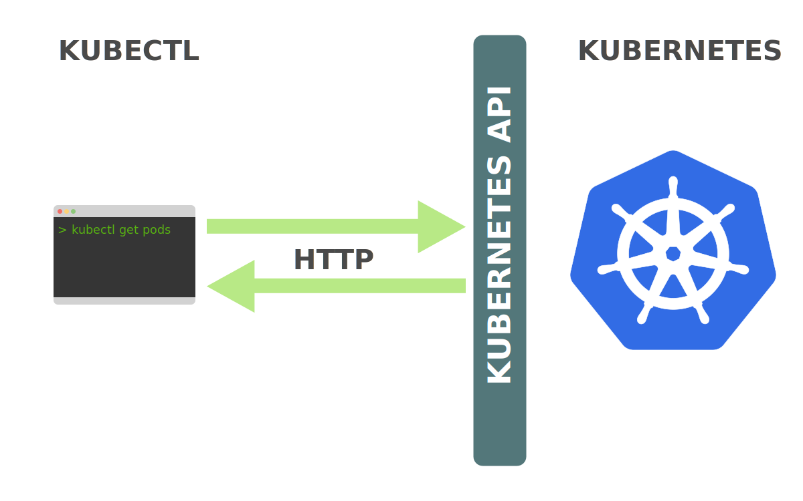
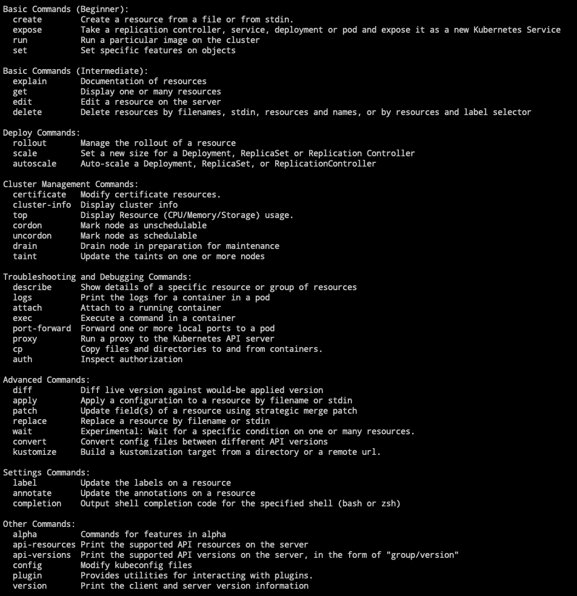
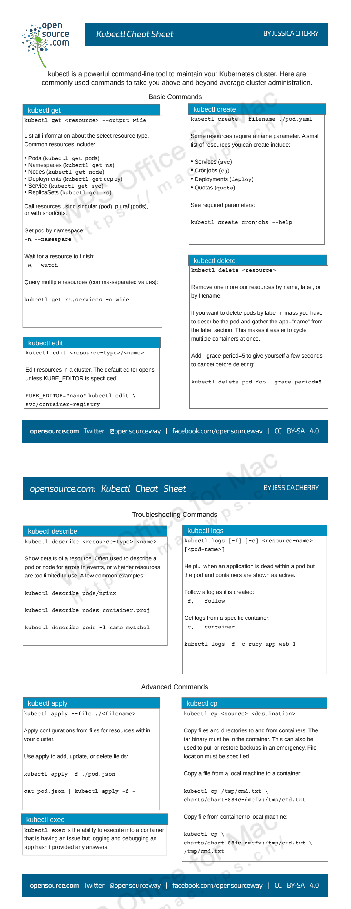

kubectl 是 Kubernetes 自带的客户端，可以用它来直接操作 Kubernetes 集群。
日常在使用 Kubernetes 的过程中，kubectl 工具可能是最常用的工具了，所以当我们花费大量的时间去研究和学习 Kuernetes 的时候，那么我们就非常有必要去了解下如何高效的使用它了。

从用户角度来说，kubectl 就是控制 Kubernetes 的驾驶舱，它允许你执行所有可能的 Kubernetes 操作；从技术角度来看，kubectl 就是 Kubernetes API 的一个客户端而已。

Kubernetes API 是一个 HTTP REST API 服务，该 API 服务才是 Kubernetes 的真正用到的用户接口，所以 Kubernetes 通过该 API 进行实际的控制。这也就意味着每个 Kubernetes 的操作都会通过 API 端点暴露出去，当然也就可以通过对这些 API 端口进行 HTTP 请求来执行相应的操作。所以，kubectl 最主要的工作就是执行 Kubernetes API 的 HTTP 请求。
- 工具使用参数
| 编号 | 参数命令 | 解释说明 |
|---|---|---|
| 1 | get |
显示一个或多个资源 |
| 2 | describe |
显示资源详情 |
| 3 | create |
从文件或标准输入创建资源 |
| 4 | update |
从文件或标准输入更新资源 |
| 5 | delete |
通过文件名、标准输入、资源名或者 label 删除资源 |
| 6 | log |
输出 pod 中一个容器的日志 |
| 7 | rolling-update |
对指定的 RC 执行滚动升级 |
| 8 | exec |
在容器内部执行命令 |
| 9 | port-forward |
将本地端口转发到 Pod |
| 10 | proxy |
为 Kubernetes API server 启动代理服务器 |
| 11 | run |
在集群中使用指定镜像启动容器 |
| 12 | expose |
将 SVC 或 pod 暴露为新的 kubernetes service |
| 13 | label |
更新资源的 label |
| 14 | config |
修改 kubernetes 配置文件 |
| 15 | cluster-info |
显示集群信息 |
| 16 | api-versions |
以”组/版本”的格式输出服务端支持的 API 版本 |
| 17 | version |
输出服务端和客户端的版本信息 |
| 18 | help |
显示各个命令的帮助信息 |
| 19 | ingress-nginx |
管理 ingress 服务的插件(官方安装和使用方式) |
- 使用相关配置
# Kubectl自动补全
$ source <(kubectl completion zsh)
$ source <(kubectl completion bash)
# 显示合并后的 kubeconfig 配置
$ kubectl config view
# 获取pod和svc的文档
$ kubectl explain pods,svc
1. 创建资源对象
- (1)分步骤创建
# yaml
kubectl create -f xxx-rc.yaml
kubectl create -f xxx-service.yaml
# json
kubectl create -f ./pod.json
cat pod.json | kubectl create -f -
# yaml2json
kubectl create -f docker-registry.yaml --edit -o json
- (2)一次性创建
kubectl create -f xxx-service.yaml -f xxx-rc.yaml
- (3)根据目录下所有的 yaml 文件定义内容进行创建
kubectl create -f <目录>
- (4)使用 url 来创建资源
kubectl create -f https://git.io/vPieo
2. 查看资源对象
- (1)查看所有 Node 或 Namespace 对象
kubectl get nodes
kubectl get namespace
- (2)查看所有 Pod 对象
# 查看子命令帮助信息
kubectl get --help
# 列出默认namespace中的所有pod
kubectl get pods
# 列出指定namespace中的所有pod
kubectl get pods --namespace=test
# 列出所有namespace中的所有pod
kubectl get pods --all-namespaces
# 列出所有pod并显示详细信息
kubectl get pods -o wide
kubectl get replicationcontroller web
kubectl get -k dir/
kubectl get -f pod.yaml -o json
kubectl get rc/web service/frontend pods/web-pod-13je7
kubectl get pods/app-prod-78998bf7c6-ttp9g --namespace=test -o wide
kubectl get -o template pod/web-pod-13je7 --template={{.status.phase}}
# 列出该namespace中的所有pod包括未初始化的
kubectl get pods,rc,services --include-uninitialized
- (3)查看所有 RC 对象
kubectl get rc
- (4)查看所有 Deployment 对象
# 查看全部deployment
kubectl get deployment
# 列出指定deployment
kubectl get deployment my-app
- (5)查看所有 Service 对象
kubectl get svc
kubectl get service
- (6)查看不同 Namespace 下的 Pod 对象
kubectl get pods -n default
kubectl get pods --all-namespace
3. 查看资源描述
- (1)显示 Pod 详细信息
kubectl describe pods/nginx
kubectl describe pods my-pod
kubectl describe -f pod.json
- (2)查看 Node 详细信息
kubectl describe nodes c1
- (3)查看 RC 关联的 Pod 信息
kubectl describe pods <rc-name>
4. 更新修补资源
- (1)滚动更新
# 滚动更新 pod frontend-v1
kubectl rolling-update frontend-v1 -f frontend-v2.json
# 更新资源名称并更新镜像
kubectl rolling-update frontend-v1 frontend-v2 --image=image:v2
# 更新 frontend pod 中的镜像
kubectl rolling-update frontend --image=image:v2
# 退出已存在的进行中的滚动更新
kubectl rolling-update frontend-v1 frontend-v2 --rollback
# 强制替换; 删除后重新创建资源; 服务会中断
kubectl replace --force -f ./pod.json
# 添加标签
kubectl label pods my-pod new-label=awesome
# 添加注解
kubectl annotate pods my-pod icon-url=http://goo.gl/XXBTWq
- (2)修补资源
# 部分更新节点
kubectl patch node k8s-node-1 -p '{"spec":{"unschedulable":true}}'
# 更新容器镜像； spec.containers[*].name 是必须的，因为这是合并的关键字
kubectl patch pod valid-pod -p \
'{"spec":{"containers":[{"name":"kubernetes-serve-hostname","image":"new image"}]}}'
- (3)Scale 资源
# Scale a replicaset named 'foo' to 3
kubectl scale --replicas=3 rs/foo
# Scale a resource specified in "foo.yaml" to 3
kubectl scale --replicas=3 -f foo.yaml
# If the deployment named mysql's current size is 2, scale mysql to 3
kubectl scale --current-replicas=2 --replicas=3 deployment/mysql
# Scale multiple replication controllers
kubectl scale --replicas=5 rc/foo rc/bar rc/baz
5. 删除资源对象
- (1)基于 xxx.yaml 文件删除 Pod 对象
# yaml文件名字按照你创建时的文件一致
kubectl delete -f xxx.yaml
- (2)删除包括某个 label 的 pod 对象
kubectl delete pods -l name=<label-name>
- (3)删除包括某个 label 的 service 对象
kubectl delete services -l name=<label-name>
- (4)删除包括某个 label 的 pod 和 service 对象
kubectl delete pods,services -l name=<label-name>
- (5)删除所有 pod/services 对象
kubectl delete pods --all
kubectl delete service --all
kubectl delete deployment --all
6. 编辑资源文件
- 在编辑器中编辑任何 API 资源
# 编辑名为docker-registry的service
kubectl edit svc/docker-registry
7. 直接执行命令
在寄主机上，不进入容器直接执行命令
- (1)执行 pod 的 date 命令，默认使用 pod 的第一个容器执行
kubectl exec mypod -- date
kubectl exec mypod --namespace=test -- date
- (2)指定 pod 中某个容器执行 date 命令
kubectl exec mypod -c ruby-container -- date
- (3)进入某个容器
kubectl exec mypod -c ruby-container -it -- bash
8. 查看容器日志
- (1)直接查看日志
# 不实时刷新
kubectl logs mypod
kubectl logs mypod --namespace=test
- (2)查看日志实时刷新
kubectl logs -f mypod -c ruby-container
9. 常用命令总结
OpenSource: 总结的快捷键使用文档！
